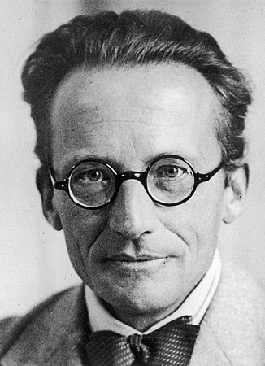
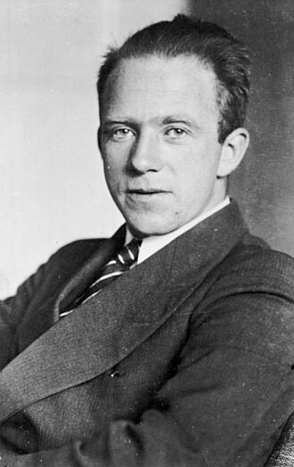
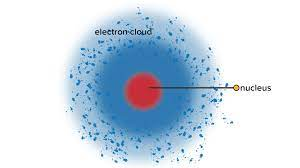

Teori atom modern atau yang dikenal juga dengan teori atom mekanika
kuantum, merupaakn teori yang membahas mengenai model atom yang paling
modern jika dibandingkan dengan berbagai teori atom lainnya. Teori ini
sendiri disempurnakan oleh seorang ahli fisika yang berasal dari Austria
yang bernama Erwin Schrodinger yang di bantu oleh peneliti bernama
Werner Heisenberg.

Erwin Schrödingerr

Werner Heisenberg
Teori Atom Mekanika Kuantum Menyatakan:
Elektron bergerak mengelilingi inti atom seperti gelombang
Posisi elektron tidak dapat ditentukan secara pasti
Kedudukan elektron dapat ditentukan melalui probabilitas atau
peluangnya
Makin besar peluang yang ada, maka akan ditemukan pula elektronnya
Kedudukan elektron digambarkan melalui bilangan kuantum
Model Atom Mekanika Kuantum

Kelebihan Teori Atom Mekanika Kuantum:
Atom mekanika kuantum dapat menjelaskan posisi peluang ditemukannya
sebuah elektron.
Atom mekanika kuantum dapat menjelaskan mengenai posisi elektron
saat mengorbit.
Atom mekanika kuantum dapat mengukur perpindahan energi eksitasi
serta emisi.
Atom mekanika kuantum adalah mampu mengidentifikasi proton serta
neutron yang ada pada inti, sedangkan elektron berada pada orbit.
Kelemahan Teori Atom Mekanika Kuantum:
Persamaan tersebut hanya dapat diterapkan secara eksak untuk
partikel dalam kotak serta atom yang memiliki elektron tunggal.
Sulit untuk diterapkan dalam sistem makroskopis dengan kumpulan
atom, seperti contohnya adalah hewan.